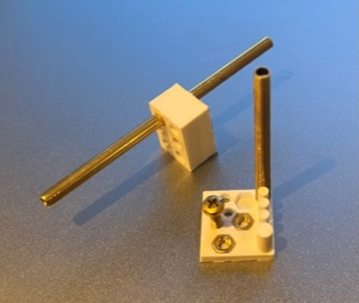

Jet design
The whole jet is made out of three 3d printed things the main jet, the impeller and the steering nozzel wich is actualy two compoment printet as one. We worked our way to get working jet.
The main reason behind desided jet for the boat was because we wanted to make something that would stand out. We had experienc using 3d printer and designing CAD Model. To get some ideas whe seurch for "3D printet jet boat" to get som rugh ideas how we would like the jet to look like and work.
Impeller
The first thing we started to design was the imepller for the jet so we could testit and see if it would be possible to have 3d print impeller that would not break under the high RPM from the motor.
After the first test wee made diffrent design of the impeller to see how it would peforme compared to the first one. Wee didn't want to make the impeller to small because then it would be impossible to 3d print so whe needit to make sure that the blade would have enought thiknes.

Main Jet
The main jet is designet to get as smoth water flow as possible and have the intake bigger then smaller so the water flow into the jet would not be a truble. In the first test wee made a small cube to test some of the messurment, on the box wee made holes for the main shaft and the screws, hexagon for the nuts and sticks in diffrent sizes to chek the fit.
After the test we were aboult to thange the sizes and print out the main jet.
After we made the boat hull wee need it to make som peak to the design
adding holes to fasten the hull and the jet together,
mounting point for the servo motor and motor mount to hold the motor in place.
The final version of the Main jet.
Steering nozzle
The first version of the nuzzle we tried to make it aboult to hold the main shaft in place and also. whe tried to stragten out the waterflow from the impeller so it would come straighter out of the nozzle an hopefully make more power for us with blades that turn in revrce direction to the impeller blades. then we made holes that fitted to the holes on the main jet. In the first version we disided to not make the stering because it was to complex because we needit it to be aboult to move and we were not sure how we wanted to solv it.
In the final version we made a ball joint for the steering and putit a pinn with rounded head on the end. The photo down below show the concept.
Before we printed the final version we was not sure how well it would work. When it came out of the printer it workt way beter then we expected.
Motor mounting
the final part of the water jet was the motor mounting to hold the motor in place. And the design was mainly messuring and drawing after the messurments to get working final results.
Final result and video of the jet process
In the end we had working engine to power the boat.